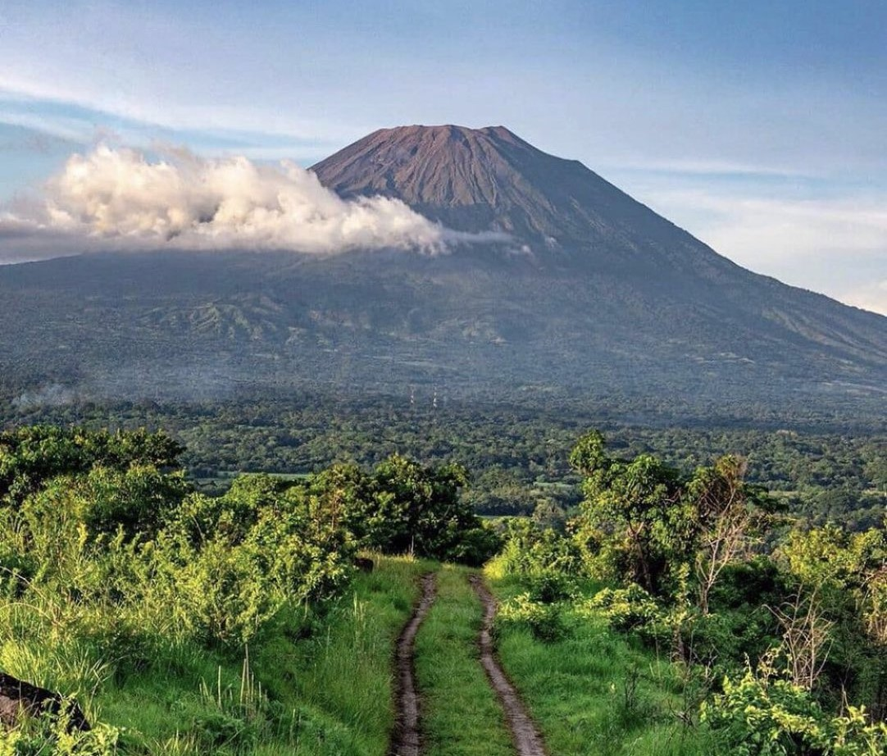
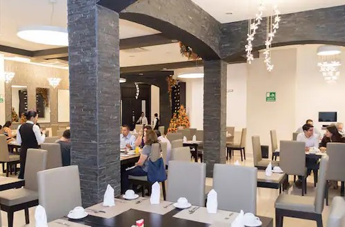

Welcome to San Miguel City Chamber of Commerce
We are San Miguel. Our chamber of commerce resides in the most important city of the estern region of El Salvador. This organization was born in an effort to provide dynamism to the growing economy of this city. The city has been experiencing an incredible wave of economic and infrastructure development, and we are supporting it by integrating locally founded businesses and companies to help each other grow and help make the city even greater.
San Miguel is an important economic hub as it receives inversion and economic activity from other parts of the country and also other Central American countries that collide in the region: Guatemala, Honduras and Nicaragua.
For about 500 years, San Miguel has been the most important in the eastern region. The city was founded in 1530 by Captain Luis de Moscoso. Since then, it has been an ever growing, ever developing city. If you have a business, a company, or if you want to start your own and be part of this amazing organization, we invite you to take a tour through this site and learn more about the perks and benefits, and also the membership application.
Weather forecast
San Miguel
/ / •
| TUE | WED | THU | FRI | SAT |
Local Companies
Cosavi
Industry: Finances
Services and products: Credits, finances, project management
Campestre Chicken
Industry: Restaurants, foods
Services and products: Events, restaurant
Tropico Inn Hotel
Industry: Hotels, tourism
Services and products: Events, vacation packages, conferences
These are some of the many companies and businesses established locally in San Miguel City. They were founded here and helped the city’s economy to grow and to keep a dynamic rithm that allows the city to have a nice inversion environment.
Upcoming Events
Sunrise at Chaparrastique Volcano
Date: from Sat, July 24 21:30 to Sun, July 25 16:00
Place: San Miguel Tours
International Conference on Sustainable Water Management (ICSWM)
Date: from Sat, Sep 25 10:00 to Sun, Sep 26 15:00
Place: Comfort Inn Hotel
World Congress on Indutstrial Biotechnology (WCIB)
Date: from Sat, Sep 25 17:00 to Sun, Sep 26 16:00
Place: Tropico Inn Hotel